Progress Entries¶
4/27/20¶
Attendance: ☐ Brody, ☑ Derek, ☐ Dylan, ☐ Ian, ☐ Jack¶
Today we started generating ideas for change up. We created design matrices to compare many different drive bases and robot designs. We decided to continue developing 2 of the drive bases in CAD so we could work with them. We also started to come up with basic strategies for both skills and competition matches. These strategies helped make a decision on what type of robot we wanted Started to work on 2 different drives bases that we wanted to compare together. One is a direct-drive mecanum base that is 6 sections long, and 7 sections wide. We had to make this base 7 section wide to accommodate the wide mecanum wheels and the future tray that will go in the drive base. The other drive base is an omni wheel drive base geared 32:84 with 600 rpm motors for an output speed of 257 rpm, we are using this high speed to make up for the lack of strafing that the mecanum drive base has. This base is is 6 sections wide and 7 sections long, which is a better sized drive base for maneuverability but might cause some problems with the future attachments such as tray and intakes


 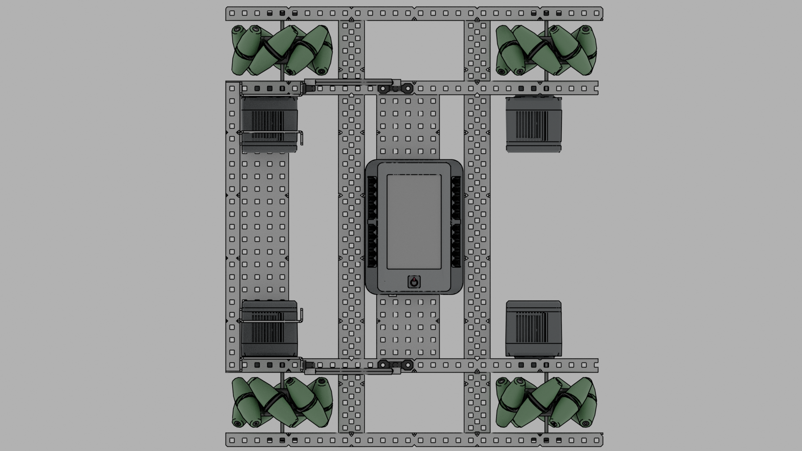
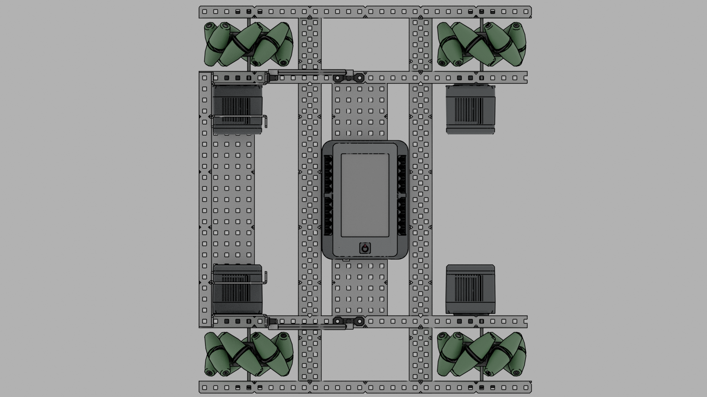
4/28/20¶
Attendance: ☐ Brody, ☑ Derek, ☐ Dylan, ☐ Ian, ☐ Jack¶
Today was mostly spent in CAD as we continued to improve the mecanum drive base. We added a 6 bar lift to the back of the drive base powered by 2 motors and running at a 32:64 gear ratio. We do not know what motor speed this motor will be running at because we do not have a physical robot to test different speeds on. We went with a six bar lift because we can mount the lift a lot lower on the robot compared to a 4 bar lift, but it will still reach the 18.3in goals to score in.
200 RPM Mecanum Drive Base with Tower¶
 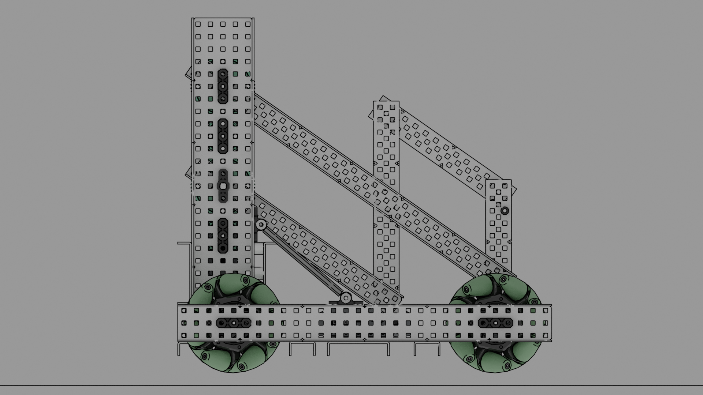
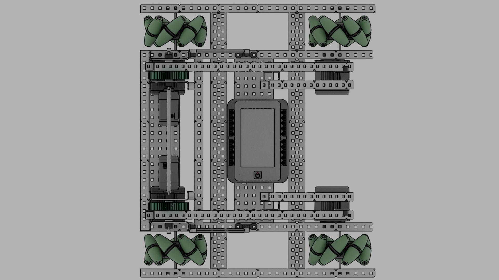
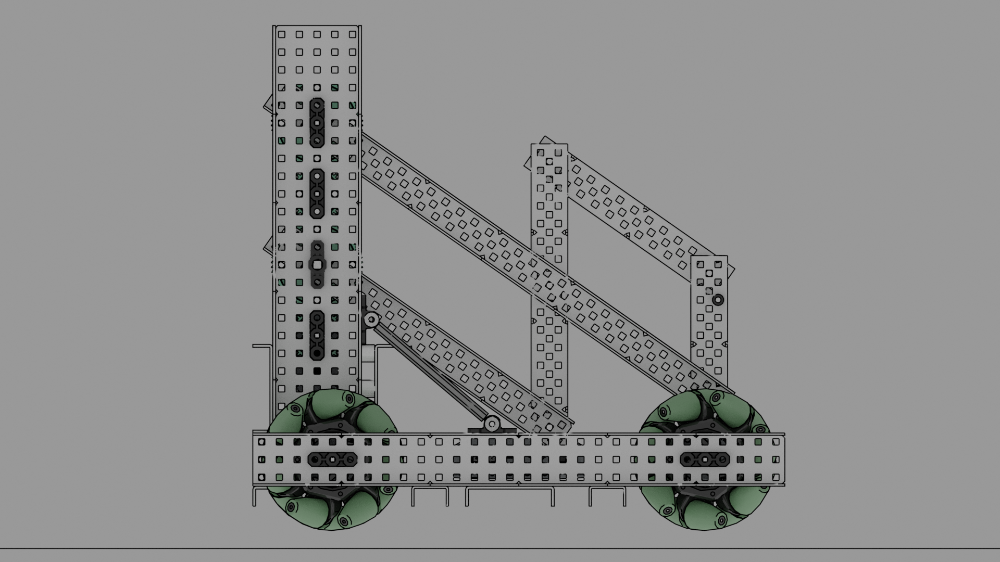
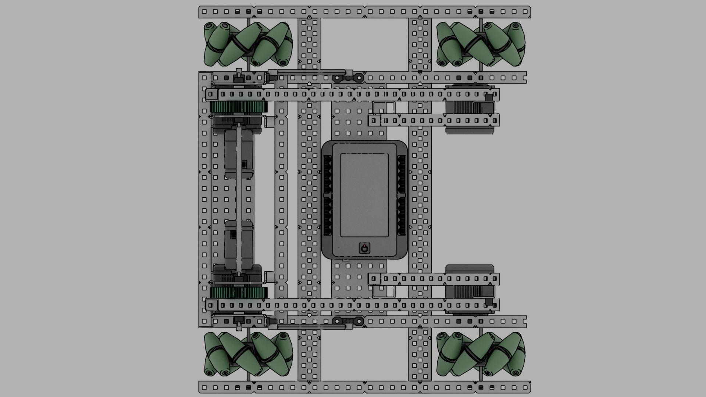
4/29/20¶
Attendance: ☐ Brody, ☑ Derek, ☐ Dylan, ☐ Ian, ☐ Jack¶
Today we completed the CAD of the mecanum drive base robot. We connected a simple 2 stage tray to the 6 bar lift that will unfold using rubber band tension and the force of a ball moving up the tray. The tray can currently hold 6 balls, we believe there is no reason to hold more than six because of the limited number of balls on the feild and how each goal can hold 3 balls. When holding 6 balls the last ball is only half in the tray and the first ball is in the intakes We also added intakes to the 6 bar, these will passively unfold at the start of a match by falling down on a hinge using gravity. The intakes are currently very close to each other at 6.5in. This might cause a problem when intakes balls when we build this robot but because we only have a CAD model we can not test this. The intakes are sticking out of the robot ~2.5in so when we go to de-score balls from the bottom of goals the robot does not interfere with the intakes and block it from reaching the balls Today we also worked on the 257rpm omni drive base. We added a third middle wheel to the drive base, powered off the back motor. This will improve weight distribution across all the wheels and also allow us to “lock” the center wheel meaning we can not be pushed. We would lock the wheel by putting screws in the omnis rollers so it can not move side to side We also started to connect a six bar lift to the robot, we are having problems finding a way to connect the six bar in a way that does not interfere with the center wheel, or any of the other wheels. Because of this the six bar is not connected to the robot fully. The main problem is that unlike the mecanum drive base, this drive base has the six bar lift mounted over the wheels because of its width. In the future if we want to continue using this drive base we need to either move the 6 bar inward away from the wheels, or make the drive base wide.
 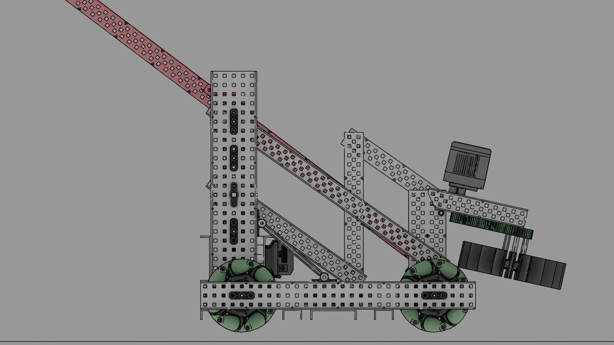
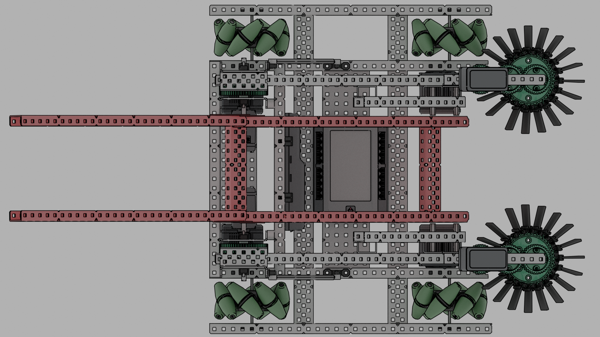
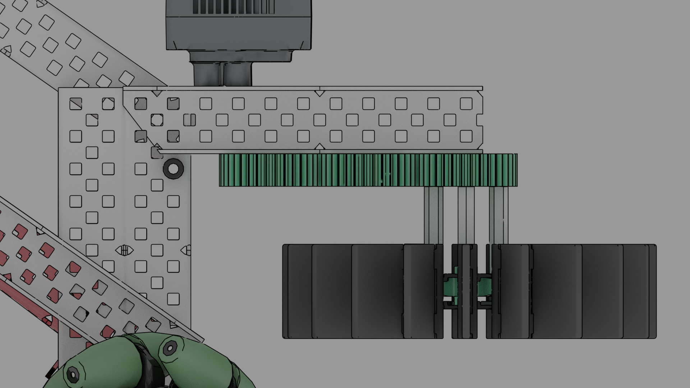
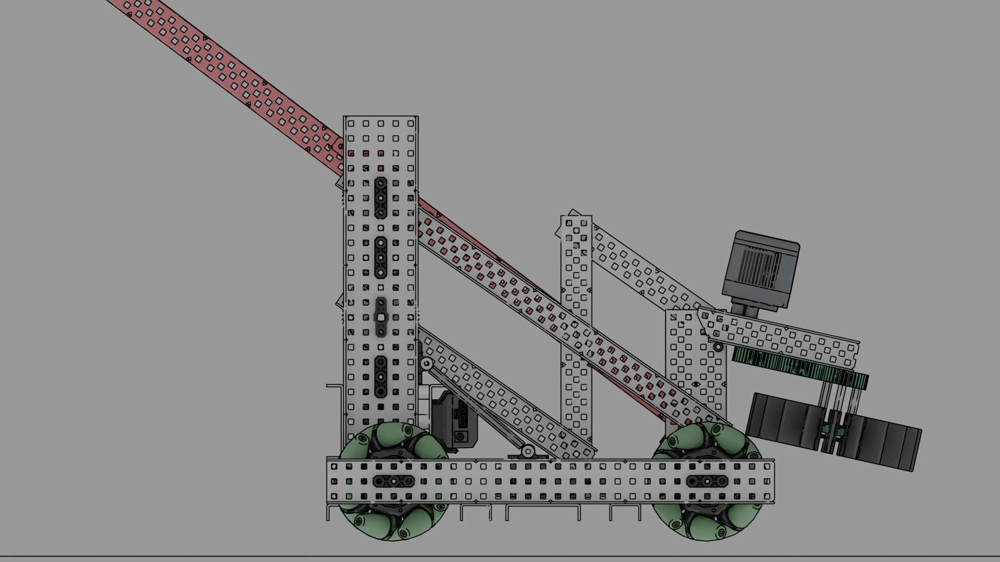
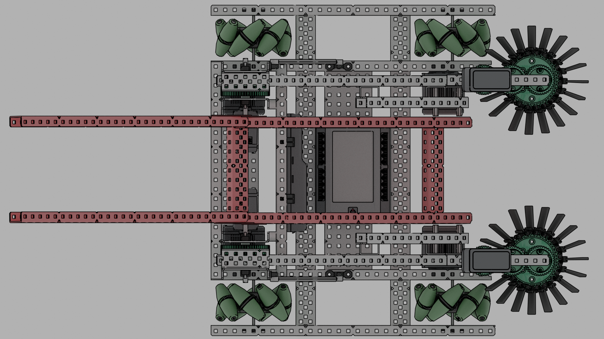
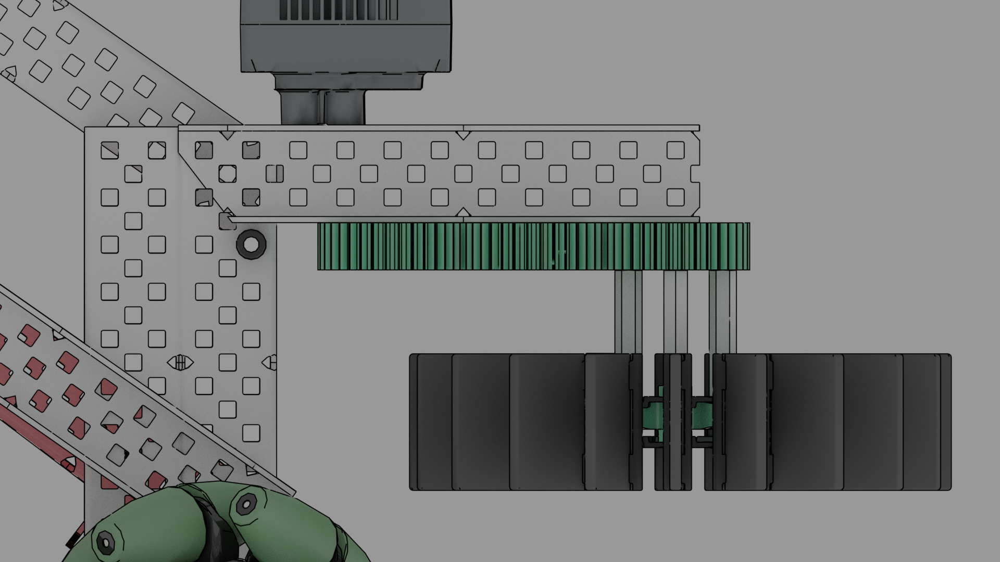


Omni Traybot¶
 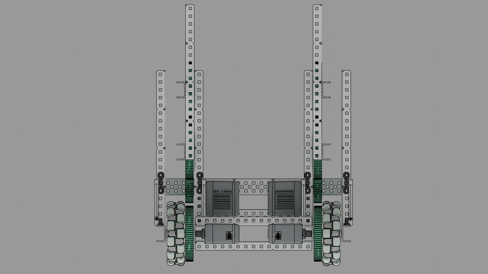
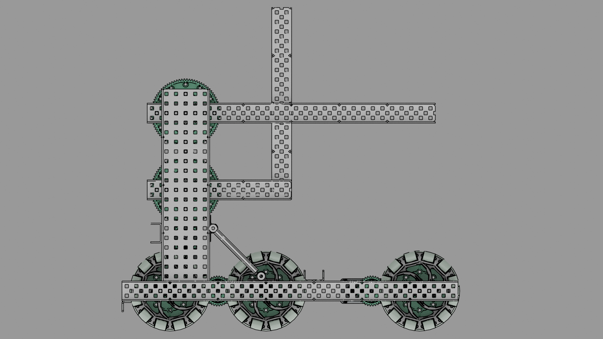
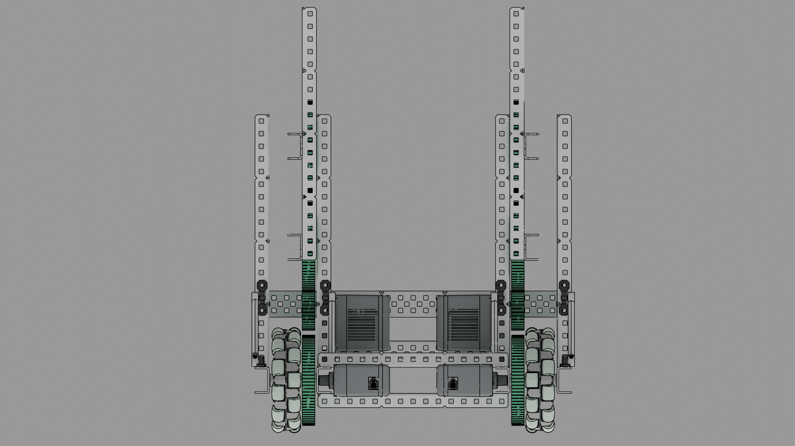
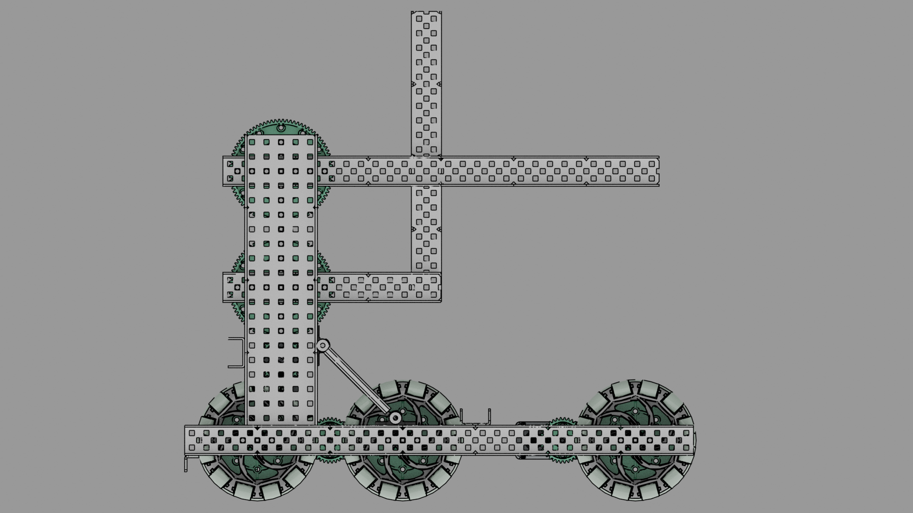
4/30/20¶
Attendance: ☐ Brody, ☑ Derek, ☐ Dylan, ☐ Ian, ☑ Jack¶
Today we worked on only the 257rpm omni drive base as the mecanum was completed the previous day. We did find a way to mount the full six bar onto the drive base but it is a lot higher than we would like. Because of this we have not yet put on intakes or a full tray. The tray that we did connect is almost a good place but is still too high. This height is also a problem for the intakes as the intakes have to fit inside the bottom of the goals to descore balls. Because of these current issues we will most likely be redesigning this drive base to more closely match the mecanum drive base in the future Today we worked on getting pseudocode for the robot. This included creating classes for the critical functions of the robot, and starting to program odometry. We looked at 7K’s code as an example as they were the number one skills team for tower takeover. We ended up talking with them to get a better understanding of how odometry worked. Because we are now using odometry in code, we need to add position trackers to the robot, for this we are using 2.5in omni wheels that have been cut in half to save space, connected to hollowed out c-channels with optical shaft encoders on them. The c channels are attached to the robot at only one point so they are free to rotate, we will be using this to our advantage so we can use a rubber band to tension the trackers to the ground. Below is a list of all the classes that we came up with that we will begin working to create.
class Chassis{}; //Controls all drive base mvmt including driver control mvmt.
class Intake{}; //Controls all intakes including driver control mvmt and auton mvmt.
class Display{}; //Controls all GUI related functions.
class Auton{}; //Controls the autonomous routines we run, both skills and autonomous phase.


5/4/20¶
Attendance: ☐ Brody, ☑ Derek, ☐ Dylan, ☐ Ian, ☐ Jack¶
Today we changed the mecanum drive base cad to have omni wheels similar to the second drive base we had. We did this because the other drive base with omni wheels was having complications with adding the intakes and tray. When we added the omni wheels where the mecanum were, we could make the drive base less wide by 4 holes. Our two other inertial sensors came in today so we were able to test and begin understanding 7K’s odometry better. They use 3 different inertial sensors, one for the left set of wheels, one for the right set of wheels, and then a 3rd as backup. Now that we have 3 inertial sensors we will be able to continue understanding 7k’s odometry and begin writing our own odometry and try to improve upon their odometry.


5/15/20¶
Attendance: ☐ Brody, ☐ Derek, ☐ Dylan, ☐ Ian, ☑ Jack¶
We began creating the GUI for our robot. We will have multiple pages, Auton selection, Sensor values, and a reset page. The Auton selection page will have a 3x3 grid of buttons that resemble the goals on the field. The idea behind it is that depending on our teammate and game plan we will choose exactly which goals we want to score in during the pre auton. Then to the left we will have two buttons for our most common autonomous runs, and a drop down above them to choose which side we are on either Blue or Red. Underneath all of that we will have a clear button in case when choosing the goals we click the wrong one and a start button which will start the auton. In between these two buttons we will have little boxes that light up to show the progress of how many goals we checked. To create all of this we used LVGL. We created a button matrix for the 9 goals, a drop down object for the drop down menu, 4 button objects for the preset autons, and the clear and start buttons, and finally 3 checkbox objects for the progress bar. We also discussed how we will do movements autonomously. We know that we want to move the robot on arc paths but currently do not know how to implement this, so further research on how to implement arc paths is needed. Below there is a photo of our current GUI. Below that are the current member functions in the Display class. These functions are what we run during the initalize phase to load the GUI and select things such as the autonomous routine.

class Display{
public:
/*
Initializes the GUI and sets up Screen and Tabs.
*/
Display& display();
/*
Changes background based on Preset DropDown.
*/
Display& backgroundcheck();
/*
Creates circles around selected goals.
*/
Display& arcchecker();
};
5/16/20¶
Attendance: ☐ Brody, ☐ Derek, ☐ Dylan, ☐ Ian, ☑ Jack¶
We wanted to improve the GUI by making it cleaner and have a nice background. Our background now is a galaxy background behind the buttons and then a picture of the field for the auton 3x3 grid. The matrix we had yesterday was made invisible and the buttons moved to positions of each goal according to the picture. The picture of the field also changes based on whether the drop down menu is selected as Red or Blue. When you select one of the goals in the 3x3 it draws a green circle around that goal so it’s easy to see which ones have been selected.

5/31/20¶
Attendance: ☐ Brody, ☐ Derek, ☐ Dylan, ☐ Ian, ☑ Jack¶
Because of how important the autonomous phase is now, with the extra win point as well as the fact people are already maxing out the driver skills score, We want to improve our code as much as possible. We are implementing PID, slew rate control, and Odometry into our code for driver and autonomous to improve the consistency. Currently we have a Chassis class, Slew class, and a Display class.(Chassis for drive base member functions, Slew for slew rate control member functions, and Display for LVGL GUI member functions.) The main two member functions of the Chassis class are drive and turn. The drive member function uses a PD (Proportional, and Derivative) loop that takes the average of the left and right tracking wheels to go to the given position, and uses slew rate control to accelerate up to max speed. The turn member function is similar to the drive member function in using a PD loop with slew rate control but instead of the tracking wheels we are using the average of three inertial sensors that face the North, East and West directions of the robot. We use the average of three because basing it on one will get more and more inaccurate over time whereas three sensors help mitigate that problem. We published our code to Github now.
Chassis& Chassis::drive(double target){
isSettled = false;
double averagePos = REncoder.get_value() + LEncoder.get_value()/2;
while(target != averagePos) {
double averagePos = REncoder.get_value() + LEncoder.get_value()/2;
double error = target - averagePos;
double prevError = error;
double derivative = error = prevError;
double power = error*kP_drive + derivative*kD_drive;
if (output <= power + rate_drive) {
output += rate_drive;
}else if(output >= power){
output -= rate_drive;
}
RF.move(-output);
RB.move(-output);
LF.move(output);
LB.move(output);
pros::delay(20);
if(averagePos < target+10 && averagePos > target-10) {
isSettled = true;
break;
}
}
return *this;
}
6/21/20¶
Attendance: ☐ Brody, ☑ Derek, ☐ Dylan, ☐ Ian, ☐ Jack¶
Starting to work on a new robot design with CAD, the biggest advantage of this design over our previous robots is that it can score and de-score at the same time. We quickly ran into a problem with our current drive base as it is not designed to move the balls out of the goals and into the intakes. The main problem is the motors and a piece of c-channel that are blocking the balls from traveling in the robot. We fixed the problem with the motors blocking the balls by moving the front motor to above the back wheel, this fixes some of the problems but we will have to redesign the drive base if we want to continue using this robot design because of the structural support c-channel in the back that is blocking the balls.
Goals for new robot¶
less than a second to score 3 balls in an empty goal less than 2 seconds to completely swap out a full goal less than a second to take a ball from the bottom to the top.


6/25/20¶
Attendance: ☐ Brody, ☑ Derek, ☐ Dylan, ☐ Ian, ☐ Jack¶
Today the old CAD was redone and finished, with all the problems we were previously having we started over completely with a new drive base and intake system. The new drive base uses 3.25in omni wheels as they are closer to the ground so our intakes have more room above the wheels and will not interfere with each other. The wheels are geared 60:36 at 200rpm for an output rpm of 333rpm. This output rpm is slightly faster than our old drive base but the smaller wheels will give us more control at this speed. The new intakes swing out at the start of a match to ~5.15in outside of the 18in restriction or ~6.9in from the front of the robot (measured from the start of the drive base) This will give us enough space to start lifting the balls up in our robot quicker than before allowing us to put the drive motors in a normal place unlike our previous designs. Along with that the new intakes consist of 2 parts that are chained together, the first part can go fully into a goal to start descoring while the other moves the balls in to the rest of the robot, the chain that connects the two parts of the intake is laid in a way that it can go around the goal posts and will not get caught The new indexer/ball tower system has been redesigned to fit in with the new front intakes, It starts sooner on the robot so the motors do not have to move to a different location and is also protected from the goal by pieces of c-channel. The main difference between the old and new systems is that on the back of the robot, we now have two extra rollers that allow us to get rid of balls that we do not want by spinning the intake in reverse. We have also added a vision sensor to the front of the robot with future plans to automate this function. Programing of the new robot We have kept the inertial sensors and tracking wheels from the old drive base in the new robot so we can continue to develop those systems We have added a vision sensor to hopefully automate the sorting of balls. Whenever we start scoring on a goal the vision sensor can detect the goal and switch to manual sorting mode.


6/26/20¶
Attendance: ☐ Brody, ☑ Derek, ☐ Dylan, ☐ Ian, ☐ Jack¶
Changed the intakes on the new robot to better fit inside the size requirements. The old intakes could not fold up properly without majorly hitting the back wheels and they would stick out, this was fixed by changing the spacing on the intakes to lift them higher up so they stay above the wheels. We do not know how this change will impact picking up balls as we do not have a physical robot to test this on Fixed random things in cad There was chain missing on the first two front rollers There was no intake flaps on the front intakes Fixed standoffs not lining up properly with c-channel holes Fixed alignment of back U-channel Fixed cortex blocking the right intake motor from folding properly
Intake Changes¶

6/28/20¶
Attendance: ☐ Brody, ☐ Derek, ☐ Dylan, ☐ Ian, ☑ Jack¶
We fixed the Auton Builder. It now stores the inputs from the GUI in independent global variables. The way the Auton Builder works is we press the goal that we want to go to, then the 2nd and 3rd goal we want to go to. After that when it switches to the Autonomous phase the robot knows it starting position and then runs the specific string of code needed to get from the starting position to the wanted goal, then it loops back in the code and based of the new position which is the 1st goal it figures it way to the 2nd goal. It then repeats this to get from the 2nd to the 3rd.
while(startPos == 0){ setStart(); arcChecker(); pros::delay(20);}
while(firstPos == 0 && startPos !=0){ setFirst(); arcChecker(); pros::delay(20);}
pros::delay(500);
while(secondPos == 0 && firstPos != 0){ setSecond();arcChecker(); pros::delay(20);}
pros::delay(500);
while(thirdPos == 0 && secondPos != 0 && firstPos != 0){ setThird(); arcChecker(); pros::delay(20);}
pros::delay(20);
7/11/20¶
Attendance: ☐ Brody, ☐ Derek, ☐ Dylan, ☐ Ian, ☑ Jack¶
Created the buttons for the third tab on the GUI. The third tab is the Reset page, it has 4 buttons that all reset different sensors or motors. There is the “Reset IMUs” which resets the three inertial sensors, “Reset Odom” which resets the tracking wheels, “Reset Vision” which resets the vision sensor, and finally “Reset Chassis” which resets the drive base motors. This page is to help debug and will not be needed to be used in competitions since all the motors and sensors get reset at the beginning of the program so this will mainly be used to debug the robot during practice.
7/24/20¶
Attendance: ☐ Brody, ☐ Derek, ☐ Dylan, ☐ Ian, ☑ Jack¶
We remade the loading screen and added our alliance logos above our team number. We also optimized the screen by using less objects. Before we had the background galaxy image and then another image that was “9447H” but now we put everything on one image and display that instead. This is better than before because we are using less memory by having less objects. We finished the CAD model today so we can start building in the future. The odometry tracking wheels were changed to be stronger, and the robot’s height was increased so we can get closer to the top of the goals. Nothing should be affected by this change as the intakes were not moved.
7/25/20¶
Attendance: ☐ Brody, ☑ Derek, ☐ Dylan, ☐ Ian, ☐ Jack¶
Today we started to build the front intakes, they are generally the same shape as the CAD model but we added extra support to the insides to reduce friction. Currently the right side intake spins a bit slower than the left and we are working to fix it. One other improvement that might come in the future is replacing the standoff chain tensioner with spacers to reduce friction on the chain.
Pictures of Changes¶
7/26/20¶
Attendance: ☑ Brody, ☑ Derek, ☑ Dylan, ☑ Ian, ☑ Jack¶
We completed building the middle intakes and indexer system today. There were not many problems when building it as we had already designed it in cad. Because we now have this piece of the robot we have started to test out our driver control programs. Initially the motors were reversed but after we fixed that, the intakes pick up balls very quickly. We may slow this down the in the future but for now it seems to be working well.
Middle Intakes and Indexer¶
8/1/20¶
Attendance: ☑ Brody, ☑ Derek, ☑ Dylan, ☑ Ian, ☑ Jack¶
Today we started to put the field together so we can now test our robot with an official goal. Along with that we completed the drive base and connected the middle intakes to the drive base. We have shortened our drive base by 1 hole to make building it easier and it should not affect the stability of the drive base. Another problem we ran into was that the back left and back right motors are hard to quick swap because of a metal plate on the bottom of the robot. For now we will keep everything the same and maybe find a way to make those motors easier to swap in the future.
8/2/20¶
Attendance: ☑ Brody, ☑ Derek, ☑ Dylan, ☑ Ian, ☑ Jack¶
Changed rubber band position and tension to allow for faster and more efficient intakes. There are no pictures here because it was just moving rubber bands up or down 1-2 notches on a gear.
8/6/20¶
Attendance: ☑ Brody, ☑ Derek, ☑ Dylan, ☑ Ian, ☑ Jack¶
Today we made the hood for our robot and started testing how it can score in goals. The hood is made out of rubber bands right now as we do not have the polycarbonate we need to complete the hood like our original design. Currently the hood does have some problems but from more testing we have concluded that they should all be solved with the polycarbonate and foam design.
Pictures of the Hood¶
8/7/20¶
Attendance: ☑ Brody, ☑ Derek, ☑ Dylan, ☑ Ian, ☑ Jack¶
Today we connected the front intakes to the robot and made the hood able to fold into the robot. The front intakes have been working well but there is a slight problem with the rubber band “hook” on the intakes as it interferes with the center goal post. We can move this easily and it should not be a problem for very long. Unfortunately our main problem with the intakes is that the right intake seems to have a lot of friction compared to the left one. More testing need to be done to find out the cause of this problem as the motor seems to be fine. Along we these problem the intakes can not fold up into size requirements right now because there is a piece that need to be cut and we currently can not do that. The hood of our robot can now be locked down using a screw catching on a plate. The hood has a bit more tension then we would like so it does come up sometimes and we might have to rework it in the future, but it will work for testing purposes.
Robot Pictures¶

8/8/20¶
Attendance: ☑ Brody, ☑ Derek, ☑ Dylan, ☑ Ian, ☑ Jack¶
Fixed various problems with the robot. Fixed cantilever axle on middle intake. Replaced temporary rubber band ramp in front of robot with grip mat. Also added an extra half cut c-channel to make this stick out more. Changed the standoffs in the front of the intakes into spacers to hopefully solve the high friction issue. Added bracing to the bottom 2 plates to make the robot stronger. Replaced sketchy connected axle in back of robot with one solid axle. Added missing parts in some areas that were not symmetrical.
Robot Pictures¶
8/10/20¶
Attendance: ☑ Brody, ☑ Derek, ☑ Dylan, ☑ Ian, ☑ Jack¶
We updated the Slew::driveSlew(double accel) member function. Before we used to just have slew that increased as the joystick increased but now we have implemented the code to realize when the robot is turning and to automatically slow down the drive base when turning even while pushing the joysticks all the way. This addition to the code helps the driver make turns more accurate and easier. We also redid the slew code for the drive base and implemented a basic P loop that gets the difference of the current joystick position and the current output of the robot it then determines whether it needs to add or subtract to get to the target value and then adds/subtracts the given amount that the human inputted into the member function.
int Slew::driveSlew(double fwdAccel, double deccel, double revAccel){
leftJoystick = master.get_analog(ANALOG_LEFT_Y);
rightJoystick = master.get_analog(ANALOG_RIGHT_Y);
if(leftJoystick/rightJoystick < 0 || leftJoystick/rightJoystick >=2)driveMax =6000;
if(rightJoystick/leftJoystick < 0 || rightJoystick/leftJoystick >=2)driveMax =6000;
if(master.get_analog(ANALOG_LEFT_Y) < 5 && master.get_analog(ANALOG_LEFT_Y) > -5 ) leftJoystick = 0;
if(master.get_analog(ANALOG_RIGHT_Y) < 5 && master.get_analog(ANALOG_RIGHT_Y) > -5 ) rightJoystick = 0;
leftError = leftJoystick*94.488 - LslewOutput; //1.58
leftOvershoot = deccel - abs(LslewOutput);
if(abs(leftError) == 400)LslewOutput = 0;
if(leftError > 0){if(leftJoystick == 0){ if(leftOvershoot >0){deccel -= leftOvershoot;}LslewOutput +=deccel;}else if(LslewOutput < driveMax){LslewOutput +=fwdAccel;}}
if(leftError < 0){if(leftJoystick == 0){ if(leftOvershoot >0){deccel -= leftOvershoot;}LslewOutput -=deccel;}else if(LslewOutput > -driveMax){LslewOutput -=revAccel;}}
rightError = rightJoystick*94.488 - RslewOutput;
rightOvershoot = deccel - abs(RslewOutput);
if(abs(rightError) == 400) RslewOutput = 0;
if(rightError > 0){if(rightJoystick == 0){ if(rightOvershoot >0){deccel -= rightOvershoot;}RslewOutput +=deccel;}else if(RslewOutput < driveMax){RslewOutput +=fwdAccel;}}
if(rightError < 0){if(rightJoystick == 0){ if(rightOvershoot >0){deccel -= rightOvershoot;}RslewOutput -=deccel;}else if(RslewOutput > -driveMax){RslewOutput -=revAccel;}}
printf("left, LOutput, leftError %F %F %F \n", rightJoystick, LslewOutput, RslewOutput);
if(RslewOutput > 12000)RslewOutput =12000;
if(LslewOutput > 12000)LslewOutput =12000;
if(LslewOutput == 0) LF.set_brake_mode(MOTOR_BRAKE_COAST); LB.set_brake_mode(MOTOR_BRAKE_COAST);
if(RslewOutput == 0) RF.set_brake_mode(MOTOR_BRAKE_COAST); RB.set_brake_mode(MOTOR_BRAKE_COAST);
LF.move_voltage(LslewOutput);
LB.move_voltage(LslewOutput);
RF.move_voltage(-RslewOutput);
RB.move_voltage(-RslewOutput);
driveMax = 12000;
return 0;
8/18/20¶
Attendance: ☑ Brody, ☑ Derek, ☑ Dylan, ☑ Ian, ☑ Jack¶
We began working on the Intake::autoSort() member function. The robot is now able to identify the opposing alliance’s ball color and will shoot it out the back of the robot. It knows what color is the opposing color by having the use input which alliance they are on and then the robot uses that information to know which color to look for. The robot autosorts by running two member functions of the intake class. First it runs autoSort() then the bulk of the autosorting is done by Intake::calculateSort(int opposingColor). The autosort member function is a switch statement that takes the global variable int Alliance which stores whether we are on the Red or Blue alliance and based on its value will pass a different value into the calculateSort member function. Then the calculateSort function actually takes a snapshot with the vision sensor and checks it for the opposingColor and if found it will run the intakes to send the ball into the back of the robot.
void Intake::calculateSort(int opposingColor){
while (true) {
pros::vision_object_s_t latestsnapshot = vis.get_by_sig(0, opposingColor);
std::cout << "sig:" << latestsnapshot.signature << std::endl; //debug
if(latestsnapshot.signature != 0){/*do mvmt to send out back*/}
pros::delay(2);
}
}
Intake& Intake::autoSort(){
switch (alliance){
case 1:{ calculateSort(REDBALL); break;/*Red Alliance*/}
case 2:{ calculateSort(BLUEBALL); break;/*Blue Alliance*/}
}
return *this;
}
9/8/20¶
Attendance: ☑ Brody, ☑ Derek, ☑ Dylan, ☑ Ian, ☑ Jack¶
We created more member functions of the Intake class since we realized we needed more control over our intakes. We realized that we wanted to be able to control the intakes and each set of rollers separetely during the autonomous, so we had to create more member functions so we could actually control them since currently we could only control all of them in one member function.
/*
Sets intakes to 0 RPM.
*/
void intakeStop();
/*
Spins indexer for the given amount of encoder counts in RPM.
@param ecount encoder counts
@param speed rpm
*/
void indexerSpin(int ecount, int speed);
/*
Sets indexer to 0 RPM.
*/
void indexerStop();
/*
Spins middle intake at given RPM.
@param speed RPM
*/
void middleSpin(int speed);
/*
Spins middleIntake for the vien amount of encoder counts in RPM.
@param ecount encoder counts
@param speed rpm
*/
void middleSpin(int ecount, int speed);
/*
Sets middleIntake to 0 RPM.
*/
void middleStop();
/*
Runs the intakes for driver control.
*/
void runIntakes();
9/22/20¶
Attendance: ☑ Brody, ☑ Derek, ☑ Dylan, ☑ Ian, ☑ Jack¶
With the scrimmage only a few days away, We began practicing as much as we could with the restrictions we have with only being able to be at the school one day a week. That being said, we were able to get a 45 point autonomous up and below is a recording of it working. Unfortunately Derek was unable to practice driving since we took up the whole time programming the autonomous, but we will be able to go to the school early in the morning and spend plenty of time practicing before it is our turn to compete. To be able to run the skills run, we also created a new member function in the Auton class called runSkills();. As well the GUI has a third option in the dropdown that allows the user to choose skills. We plan on keeping this feature as well, since it will be useful for all competition where we want to run our autonomous skills run.
45 Point Auton¶
9/29/20¶
Attendance: ☑ Brody, ☑ Derek, ☑ Dylan, ☑ Ian, ☑ Jack¶
The scrimmage results are finally in, unfortunately we did not do as well as we hoped but we did learn a lot and we now have a clear plan for what improvements we want to make to our robot and code to make us do better for our first real tournament which is on November 21.
List of Improvements¶
1 button auto sorting and auto sorting when cylcing goals.
Improve intakes to intake balls easier.
Re-build hood to make the balls always make it into the goal.
Spend more time practicing both Auton and Driving.
All of these goals will be achieved by November 21st.

10/6/20¶
Attendance: ☑ Brody, ☑ Derek, ☑ Dylan, ☑ Ian, ☑ Jack¶
Intake Changes¶
Static intakes (dont fold out)
Geared intakes instead of connected by track
A mechanism to push the goal up a bit to help the ball leave the goal
Today we solely focused on improving our intakes. We began by redoing the core design of them and building something similar to the design we had in Tower Takeover. This new design is better because it encompases all of the criteria above which were all pitfalls of the last design.
New Intakes¶
10/13/20¶
Attendance: ☑ Brody, ☑ Derek, ☑ Dylan, ☑ Ian, ☑ Jack¶
Problems with scoring¶
Description¶
The ball indexed at the top of the robot has trouble scoring itself because it doesn’t have enough speed.
Attempt to fix it¶
We tried increasing gear ratio to 2:1 to make the ball faster. While increasing it to have more speed, the ball was not able to move at all.To help this, we are going from a 2:1 to a 1:2 gear ratio. While making the gear ratio 1:2, it was the worst out of the three. Our next approach was changing the curve of our hood. We tried having the hood bend upward at the end of it which turned out to fix the problem we were having. TWhile this hood does do a good job at scoring the balls, it does have a hard time supporting itself and also starting in the size requirements. Next week we are going to redesign the hood so it meets all of these requirements.
10/20/20¶
Attendance: ☑ Brody, ☑ Derek, ☑ Dylan, ☑ Ian, ☑ Jack¶
Hood Changes¶
Near flat piece of polycarbonate.
Easy and consistent starting postition.
Secure position for the top line sensor.
Today we solely focused on improving our hood. We began by redoing the way it connected to the robot as the old design was weak and in the way. The new design has the hood connect to the two c-channels that create the back tower of our robot. Since we mounted it this way, it also able to fit inside the top roller for an easy and consistent starting position. Our new hood is almost completely flat. To help with keeping constant pressure on the ball, we put 1.5” spacers at the end of it to give it just enough of an arc that would give the ball just the right amount of pressure.
New Hood¶
10/27/20¶
Autosort Function¶
Since we got VEX’s new optical sensor that can sense the color of objects, we decided that we wanted to use that instead of the vision sensor since the sensor is more compact and is more efficient at detecting color than the vision sensor. Since the sensor currently does not have support in PROS we began testing it in VEXCODE. Since we implemented the sensor we are able to now remove the bottom line sensor since now when we index balls we can use the optical sensor to stop the ball and the bottom line sensor is redundant. Since the optical sensor might not be supported in PROS by the time of our first competition on 11/21/20 we will probably not be using this feature and stick with normal auto indexing. But we will continue developing and perfect it so when it becomes supported we will be ready to implement it fully. Below is the current working autosort function.
void calculateSort(int goodBall){ //This function is run by autoSort() AutoSort inputs the value for goodBall goodBall tells the robot if red or blue is good
switch (goodBall){
case 1:{
if(Optical2.hue() <= 10){ //Sees RED Ball //If there is a ball at the top already it will stop this ball at the Optical Sensor
middleIntake.setVelocity(50, rpm);
indexer.setVelocity(80, rpm);
indexer.spin(forward);
redBall=1;
if(topLine.value(pct)<=60)middleIntake.stop();
}
if(Optical2.color() == blue){middleIntake.setVelocity(50, rpm); middleIntake.spin(forward); if(topLine.value(pct) >=60){indexer.spin(reverse);}}
if(topLine.value(pct) <=60){
indexer.stop();
}
redBall=0;
break;
}
case 2:{
if(Optical2.hue() == blue){ //Sees BLUE Ball
middleIntake.setVelocity(100, rpm);
indexer.setVelocity(100, rpm);
middleIntake.spin(forward);
indexer.spin(forward);
if(topLine.value(pct) <=60){
indexer.stop(); //Intake until it reaches top Line Sensor
if(midLine.value(pct) <=60)middleIntake.stop();
}
}else if(Optical2.hue() <= 10)middleIntake.spin(forward);
break;
}
}
}
Finalizing the Robot for the 11/21 Competition¶
We are very happy with the way our robot is right now, so we decided that today was our last editing day and that starting next tuesday we will begin practicing again in preparation for our competition. Our goals for this competition are to win Tournament Champion, Skills, and Excellence if possible. We are confident that if we practice enough that we will be more than able to do this with our current robot.
Practice Goals¶
For Pre-auton, we want a program that will be able to fill our home row. We want this because if we can fill the home row in every match we will get a lot of extra Win Points which will help us rank high. For Autonomous Skills, if time allows, we will improve upon our home row pre-auton by either trying to fill the rest of the goals or by filling only a couple rows but also removing the blue balls from them. For Driving Skills, Our goal is to get at least 100 points and then begin trying to get the max score by descoring all the blue balls too
11/3/20¶
Attendance: ☑ Brody, ☑ Derek, ☑ Dylan, ☑ Ian, ☑ Jack¶
Goals for today¶
Begin practicing!
What we did today¶
Noticed a problem with scoring balls into goal, a lot of speed loss, indexer meets polycarbonate hood. wanted to combat this by pulling back the hood. Rebanded robot.
Our first real tournament is coming up really soon. It is on the 21st and is a saturday. Unfortunately only three members are allowed to go so we had to decide who 3 were going. Due to Dylan and Ian already having plans for that weekend, we didn’t have too much of a problem deciding since only Brody, Derek and Jack are able to go anyways.
Auto Sort Function¶
Last thursday (10/29/20) PROS pushed a new kernel update that supported the optical and distance sensors so we were able to port over our code we created in VEXcode to our actual program. When we ported it over, we also increased the speed at which the intakes and rollers run so it is much faster now. We also created a new function for sorting when we are interacting with the goals. The code is a simplified version of the normal auto sorting but with a few differences. The main one is that it no longer checks to see if it found the right color, it only checks for the enemy color. Upon finding the enemy color it will reverse the top indexer to send the enemy ball out the back of the robot. Another change to it is that instead of stopping the ball at the top line sensor, it spins is all rollers to score the balls in the goals. The way this works is that it will be scoring all the balls and upon finding the enemy color it will eject that out the back of the robot and then immediately continue scoring.
Goals for next week’s Practice¶
Make sure the robot is in size requirements with the hood deployment.
Fine tune auto sorting
Begin Practicing!
void Intake::goalSort(int allianceColor){ //The sorting code when we are cycling balls at a Goal.
switch (allianceColor){
case REDBALL:{
LOptical.set_led_pwm(ledLevel);
ROptical.set_led_pwm(ledLevel);
intakeSpin(200);
indexerSpin(600);
middleSpin(600);
double currentHue = (LOptical.get_hue() + ROptical.get_hue())/2;
printf("currentHue %F\n", currentHue); //debug code
if(currentHue >= blueHue){indexerSpin(-600);pros::delay(250);} //If there is a blue ball it will send it out back.
break;
}
case BLUEBALL:{
LOptical.set_led_pwm(ledLevel);
ROptical.set_led_pwm(ledLevel);
intakeSpin(200);
indexerSpin(600);
middleSpin(600);
double currentHue = (LOptical.get_hue() + ROptical.get_hue())/2;
printf("currentHue %F\n", currentHue); //debug code
if(currentHue <= redHue){indexerSpin(-600);pros::delay(250);} //If there is a red ball it will send it out back.
break;
}
}
}
11/10/20¶
Attendance: ☑ Brody, ☑ Derek, ☐ Dylan, ☑ Ian, ☑ Jack¶
Goals for today¶
Begin practicing!
What we did today¶
Practice!
Minor tweaks to slew and autosort code.
Auto Sort Fine tuning¶
With the auto sorting, we had a problem with the ball going past the top line sensor. We had been trying to fix it by lowering the speed of the top indexer but this just made the problem worse. The actual problem wasn’t the timeframe to sense the ball but actually the speed difference between the top and middle rollers. Since the middle ones were faster than the top, it would cause a weird anomaly where the ball would idle for a little bit and move backwards and then when it would go up to the line sensor it would not be able to sense the ball. To fix this all we had to do was make both the middle and top rollers spin the same rpm. We also had an issue with the enemy ball cycling all the way through in both the auto sorting and the goal sorting. To fix this we added a second optical sensor and lowered both of them to be right behind the back of the intakes. This now allows the balls to be read very early and more accurately since both sensors are very close to the balls when they enter. Even if a ball comes in a little astray to one side the second optical sensor will be able to still read the ball.
Practice Runs¶
We spent the whole day practicing Driver Skills. Throughout the practice Derek was making constant improvements. This was a very successful day today since Derek got to begin practicing and with even more practice theres no doubt that we can get a max score of 126 points.
Run # |
Points Scored |
Run # |
Points Scored |
|---|---|---|---|
1. |
53 points |
7. |
83 points |
2. |
77 points |
8. |
74 points |
3. |
82 points |
9. |
81 points |
4. |
59 points |
10. |
106 points |
5. |
93 points |
11. |
109 points |
6. |
81 points |
12. |
107 points |
Goals for next week’s Practice¶
Begin programming the autonomous routines. Focus on the 15 sec Home Row auton first then the 60 sec auton.
Continue Drive Practice.